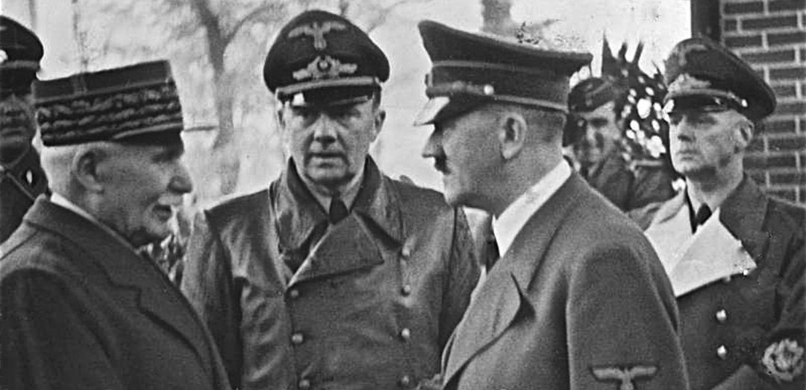
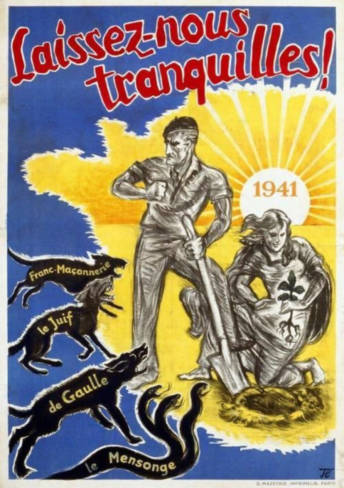
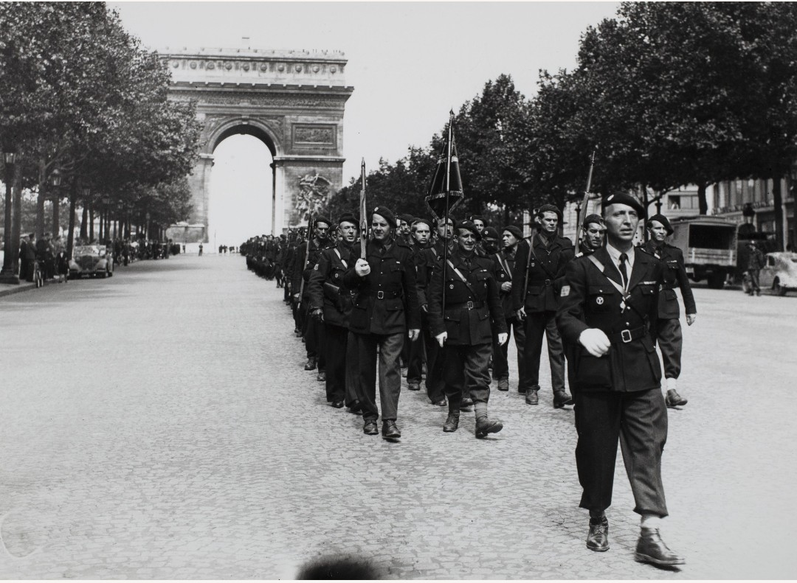
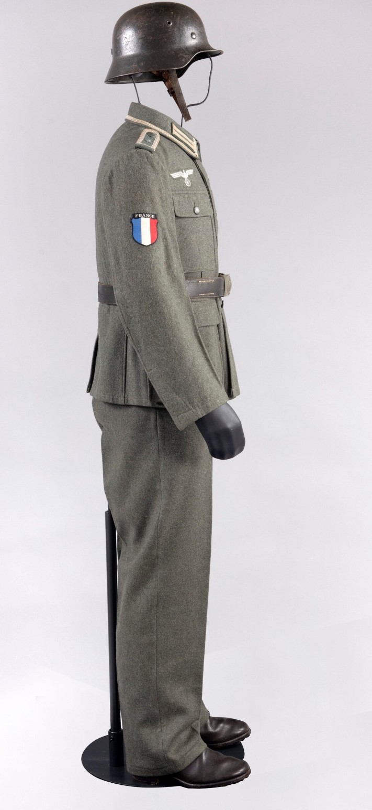

La collaboration désigne l’ensemble des actions menées par des autorités, organisations et individus français pour soutenir l’Allemagne nazie entre 1940 et 1944.
Elle prend plusieurs formes : politique, idéologique, policière, économique et militaire.
La collaboration est aujourd’hui reconnue comme une trahison envers la République et les valeurs démocratiques françaises.
Le régime de Vichy, dirigé par le maréchal Pétain, engage officiellement la France dans une politique de collaboration d’État avec l’Allemagne nazie.
La rencontre de Montoire en octobre 1940 symbolise cet engagement.

Le régime diffuse une propagande visant à :
Les affiches, journaux et radios participent à la diffusion de cette idéologie.

La police française et la Milice jouent un rôle central dans la collaboration :
La Milice, créée en 1943, devient l’un des instruments les plus brutaux du régime.

Certains Français s’engagent volontairement dans des unités combattant aux côtés de l’Allemagne :
Ces engagements sont motivés par l’idéologie, l’opportunisme ou l’antisémitisme.
Après la Libération, la collaboration est jugée comme une trahison nationale. Des procès ont lieu, visant les responsables politiques, policiers et militaires.
La mémoire de la collaboration reste un sujet sensible, essentiel pour comprendre les dérives possibles d’un État en temps de crise.